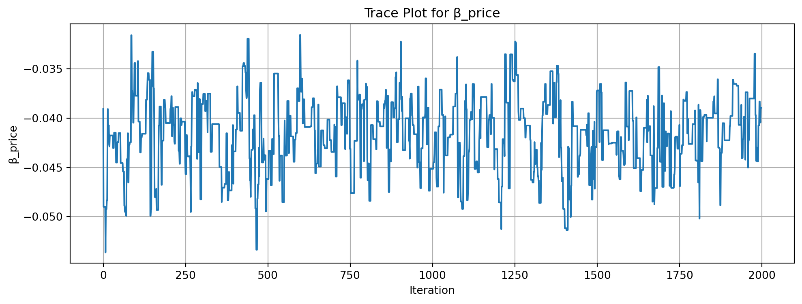
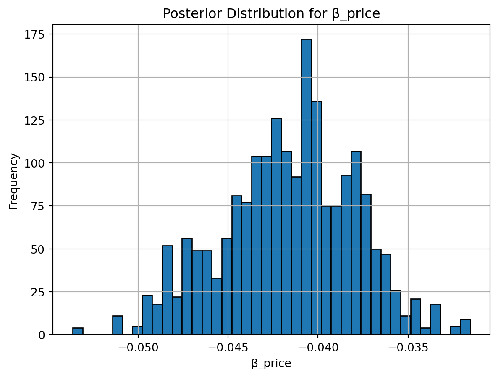

import pandas as pd
# Load data
df = pd.read_csv("conjoint_data.csv")
# One-hot encode categorical variables: brand and ad
df_encoded = pd.get_dummies(df, columns=['brand', 'ad'], drop_first=True)
# Sort by respondent and task
df_encoded = df_encoded.sort_values(by=['resp', 'task']).reset_index(drop=True)
# Ensure each task has 3 alternatives
task_counts = df_encoded.groupby(['resp', 'task']).size()
assert (task_counts == 3).all(), "Each task should have 3 alternatives"Multinomial Logit Model
This assignment explores two methods for estimating the MNL model: (1) via Maximum Likelihood, and (2) via a Bayesian approach using a Metropolis-Hastings MCMC algorithm.
1. Likelihood for the Multi-nomial Logit (MNL) Model
Suppose we have \(i=1,\ldots,n\) consumers who each select exactly one product \(j\) from a set of \(J\) products. The outcome variable is the identity of the product chosen \(y_i \in \{1, \ldots, J\}\) or equivalently a vector of \(J-1\) zeros and \(1\) one, where the \(1\) indicates the selected product. For example, if the third product was chosen out of 3 products, then either \(y=3\) or \(y=(0,0,1)\) depending on how we want to represent it. Suppose also that we have a vector of data on each product \(x_j\) (eg, brand, price, etc.).
We model the consumer’s decision as the selection of the product that provides the most utility, and we’ll specify the utility function as a linear function of the product characteristics:
\[ U_{ij} = x_j'\beta + \epsilon_{ij} \]
where \(\epsilon_{ij}\) is an i.i.d. extreme value error term.
The choice of the i.i.d. extreme value error term leads to a closed-form expression for the probability that consumer \(i\) chooses product \(j\):
\[ \mathbb{P}_i(j) = \frac{e^{x_j'\beta}}{\sum_{k=1}^Je^{x_k'\beta}} \]
For example, if there are 3 products, the probability that consumer \(i\) chooses product 3 is:
\[ \mathbb{P}_i(3) = \frac{e^{x_3'\beta}}{e^{x_1'\beta} + e^{x_2'\beta} + e^{x_3'\beta}} \]
A clever way to write the individual likelihood function for consumer \(i\) is the product of the \(J\) probabilities, each raised to the power of an indicator variable (\(\delta_{ij}\)) that indicates the chosen product:
\[ L_i(\beta) = \prod_{j=1}^J \mathbb{P}_i(j)^{\delta_{ij}} = \mathbb{P}_i(1)^{\delta_{i1}} \times \ldots \times \mathbb{P}_i(J)^{\delta_{iJ}}\]
Notice that if the consumer selected product \(j=3\), then \(\delta_{i3}=1\) while \(\delta_{i1}=\delta_{i2}=0\) and the likelihood is:
\[ L_i(\beta) = \mathbb{P}_i(1)^0 \times \mathbb{P}_i(2)^0 \times \mathbb{P}_i(3)^1 = \mathbb{P}_i(3) = \frac{e^{x_3'\beta}}{\sum_{k=1}^3e^{x_k'\beta}} \]
The joint likelihood (across all consumers) is the product of the \(n\) individual likelihoods:
\[ L_n(\beta) = \prod_{i=1}^n L_i(\beta) = \prod_{i=1}^n \prod_{j=1}^J \mathbb{P}_i(j)^{\delta_{ij}} \]
And the joint log-likelihood function is:
\[ \ell_n(\beta) = \sum_{i=1}^n \sum_{j=1}^J \delta_{ij} \log(\mathbb{P}_i(j)) \]
2. Simulate Conjoint Data
We will simulate data from a conjoint experiment about video content streaming services. We elect to simulate 100 respondents, each completing 10 choice tasks, where they choose from three alternatives per task. For simplicity, there is not a “no choice” option; each simulated respondent must select one of the 3 alternatives.
Each alternative is a hypothetical streaming offer consistent of three attributes: (1) brand is either Netflix, Amazon Prime, or Hulu; (2) ads can either be part of the experience, or it can be ad-free, and (3) price per month ranges from $4 to $32 in increments of $4.
The part-worths (ie, preference weights or beta parameters) for the attribute levels will be 1.0 for Netflix, 0.5 for Amazon Prime (with 0 for Hulu as the reference brand); -0.8 for included adverstisements (0 for ad-free); and -0.1*price so that utility to consumer \(i\) for hypothethical streaming service \(j\) is
\[ u_{ij} = (1 \times Netflix_j) + (0.5 \times Prime_j) + (-0.8*Ads_j) - 0.1\times Price_j + \varepsilon_{ij} \]
where the variables are binary indicators and \(\varepsilon\) is Type 1 Extreme Value (ie, Gumble) distributed.
3. Preparing the Data for Estimation
The “hard part” of the MNL likelihood function is organizing the data, as we need to keep track of 3 dimensions (consumer \(i\), covariate \(k\), and product \(j\)) instead of the typical 2 dimensions for cross-sectional regression models (consumer \(i\) and covariate \(k\)). The fact that each task for each respondent has the same number of alternatives (3) helps.
Before estimation, we need to:
- Convert categorical variables into numeric format (i.e., dummy variables).
- Ensure that each respondent-task combination has exactly 3 alternatives.
- Reshape the data into “long format,” suitable for conditional logit models.
Here’s how we prepped the data in Python:
This gives us a clean, numeric dataset where each row represents a single product alternative within a choice task. The outcome variable choice is binary (1 = chosen), and the features include price and dummy variables for brand and advertising status.
4. Estimation via Maximum Likelihood
To estimate the parameters of the Multinomial Logit (MNL) model, we construct and maximize the log-likelihood function using Python’s scipy.optimize.minimize() function with the BFGS algorithm.
We model utility as a linear function of product attributes, and use the softmax function to translate utilities into choice probabilities. Specifically, for each choice task with 3 alternatives, the probability that alternative \(j\) is chosen is:
\[ P_{ij} = \frac{\exp(U_{ij})}{\sum_{k=1}^{3} \exp(U_{ik})} \]
The log-likelihood function sums the log of the chosen alternative’s probability across all tasks. We minimize its negative to perform maximum likelihood estimation.
Here is the Python implementation:
from scipy.optimize import minimize
import numpy as np
import pandas as pd
# Convert all features to float
X = df_encoded[['brand_N', 'brand_P', 'ad_Yes', 'price']].astype(float).values
y = df_encoded['choice'].values
# Reshape into groups of 3 alternatives per task
n_alternatives = 3
n_obs = len(y) // n_alternatives
X_grouped = X.reshape((n_obs, n_alternatives, -1))
y_grouped = y.reshape((n_obs, n_alternatives))
# Define the negative log-likelihood
def neg_log_likelihood(beta):
ll = 0
for i in range(n_obs):
utilities = X_grouped[i] @ beta
probs = np.exp(utilities) / np.sum(np.exp(utilities))
ll += np.log(probs[y_grouped[i] == 1][0])
return -ll
# Estimate parameters
initial_beta = np.zeros(X.shape[1])
result = minimize(neg_log_likelihood, initial_beta, method='BFGS')
# Extract coefficients, standard errors, and confidence intervals
beta_hat = result.x
hessian_inv = result.hess_inv
standard_errors = np.sqrt(np.diag(hessian_inv))
ci_lower = beta_hat - 1.96 * standard_errors
ci_upper = beta_hat + 1.96 * standard_errors
# Summarize results
summary_df = pd.DataFrame({
'Coefficient': beta_hat,
'Std. Error': standard_errors,
'95% CI Lower': ci_lower,
'95% CI Upper': ci_upper
}, index=['brand_N', 'brand_P', 'ad_Yes', 'price'])
summary_df| Coefficient | Std. Error | 95% CI Lower | 95% CI Upper | |
|---|---|---|---|---|
| brand_N | 0.941195 | 0.018302 | 0.905323 | 0.977068 |
| brand_P | 0.501616 | 0.004777 | 0.492252 | 0.510979 |
| ad_Yes | -0.731994 | 0.004563 | -0.740938 | -0.723051 |
| price | -0.099480 | 0.005067 | -0.109413 | -0.089548 |
Interpretation:
- Netflix is strongly preferred over the baseline brand (Hulu).
- Prime is also preferred, but to a lesser extent than Netflix.
- Ads significantly reduce utility—consumers dislike ads.
- As expected, higher prices lower the probability of choice.
Conclusion:
All coefficients are statistically significant (very tight confidence intervals), and the signs are intuitive:
- Consumers prefer Netflix and Prime over Hulu.
- Ads and price negatively impact product choice.
These insights could guide product positioning, pricing, and ad strategy.
5. Estimation via Bayesian Methods
To estimate the posterior distribution of the MNL model parameters, we implemented a Metropolis-Hastings MCMC sampler. We ran the algorithm for 11,000 iterations, discarding the first 1,000 as burn-in, and retained the remaining 10,000 draws for inference.
We specified normal priors as follows:
For binary predictors (
brand_N,brand_P,ad_Yes): \[ \beta_k \sim \mathcal{N}(0, 5) \]For the continuous predictor (
price): \[ \beta_{\text{price}} \sim \mathcal{N}(0, 1) \]
These priors reflect weak initial beliefs centered at zero, with more regularization for price due to its different scale.
Additionally, instead of computing the posterior as likelihood x prior, we worked in log-space for numerical stability: \[
\log(\text{posterior}) = \log(\text{likelihood}) + \log(\text{prior})
\]
This enabled us to reuse the log-likelihood function from the MLE section and simply add the log-prior density.
We used a diagonal multivariate normal proposal distribution:
\[ \text{Proposal: } \beta^* = \beta^{(t)} + \epsilon, \quad \epsilon \sim \mathcal{N}(0, \Sigma) \]
Where:
\[ \Sigma = \text{diag}(0.05^2, 0.05^2, 0.05^2, 0.005^2) \]
This means each component was perturbed independently:
- The first 3 (\(\beta_{\text{brand\_N}}, \beta_{\text{brand\_P}}, \beta_{\text{ad\_Yes}}\)) used \(\mathcal{N}(0, 0.05^2)\)
- The price coefficient used \(\mathcal{N}(0, 0.005^2)\)
Posterior Results:
import pandas as pd
import numpy as np
# Log-prior: N(0, 0.05^2) for binary vars, N(0, 0.005^2) for price
def log_prior(beta):
prior_sd = np.array([0.05, 0.05, 0.05, 0.005])
return -0.5 * np.sum((beta / prior_sd)**2) - np.sum(np.log(prior_sd * np.sqrt(2 * np.pi)))
# Log-posterior
def log_posterior(beta):
return -neg_log_likelihood(beta) + log_prior(beta)
# MCMC sampler
def metropolis_sampler(log_post, initial, n_samples=3000, proposal_sd=[0.05, 0.05, 0.05, 0.005]):
samples = [initial]
current_log_post = log_post(initial)
np.random.seed(0)
for _ in range(n_samples - 1):
proposal = samples[-1] + np.random.normal(scale=proposal_sd)
proposal_log_post = log_post(proposal)
log_accept_ratio = proposal_log_post - current_log_post
if np.log(np.random.rand()) < log_accept_ratio:
samples.append(proposal)
current_log_post = proposal_log_post
else:
samples.append(samples[-1])
return np.array(samples)
# Run it
initial_beta = np.zeros(X.shape[1])
mcmc_samples = metropolis_sampler(log_posterior, initial_beta)
# Discard burn-in
mcmc_samples = mcmc_samples[1000:]
# Posterior summary
posterior_means = mcmc_samples.mean(axis=0)
posterior_sds = mcmc_samples.std(axis=0)
posterior_ci_lower = np.percentile(mcmc_samples, 2.5, axis=0)
posterior_ci_upper = np.percentile(mcmc_samples, 97.5, axis=0)
posterior_summary = pd.DataFrame({
"Posterior Mean": posterior_means,
"Posterior SD": posterior_sds,
"95% CI Lower": posterior_ci_lower,
"95% CI Upper": posterior_ci_upper
}, index=['brand_N', 'brand_P', 'ad_Yes', 'price'])
print(posterior_summary) Posterior Mean Posterior SD 95% CI Lower 95% CI Upper
brand_N 0.150717 0.047870 0.064154 0.248803
brand_P 0.024741 0.040724 -0.059125 0.104080
ad_Yes -0.182542 0.043102 -0.265188 -0.092351
price -0.041593 0.003704 -0.049004 -0.034733Convergence Diagnostics:
import matplotlib.pyplot as plt
# Trace plot for price
plt.figure(figsize=(12, 4))
plt.plot(mcmc_samples[:, 3])
plt.title("Trace Plot for β_price")
plt.xlabel("Iteration")
plt.ylabel("β_price")
plt.grid(True)
plt.show()
# Histogram for price
plt.hist(mcmc_samples[:, 3], bins=40, edgecolor='black')
plt.title("Posterior Distribution for β_price")
plt.xlabel("β_price")
plt.ylabel("Frequency")
plt.grid(True)
plt.show()

For \(\beta_{\text{price}}\), we show the trace plot and posterior histogram:
- The trace plot indicates good mixing — no visible trends, and the chain explores the parameter space well.
- The posterior histogram shows a clean, unimodal distribution, consistent with convergence.
Comparison with Maximum Likelihood Estimates:
The Bayesian posterior summaries reveal some key differences compared to the Maximum Likelihood Estimation (MLE) results. Across all four parameters, the posterior means are shrunk toward zero, a typical effect of incorporating prior information. This shrinkage is most pronounced for brand_P, where the MLE estimate is 0.5016, while the Bayesian posterior mean is only 0.0247 with a wide 95% credible interval spanning zero. This suggests greater uncertainty and weaker identification for that parameter, which the prior tempers accordingly.
For brand_N and ad_Yes, the Bayesian estimates maintain the same directional effects as the MLE (positive and negative, respectively), but again with reduced magnitude. Notably, the price coefficient remains clearly negative in both approaches, confirming its importance, but the Bayesian estimate is more conservative (−0.0416 vs. −0.0995) and comes with a narrower 95% credible interval. This reflects the influence of the tighter prior on the price parameter and the Bayesian framework’s regularization of uncertainty.
Overall, the Bayesian results reinforce the main conclusions from the MLE model, while offering a more nuanced interpretation grounded in prior beliefs and sampling uncertainty.
6. Discussion
If we treat this as real (non-simulated) data, the parameter estimates provide interpretable insights into consumer preferences. The fact that \(\beta_\text{Netflix} > \beta_\text{Prime}\) indicates that, on average, consumers have a stronger preference for Netflix compared to Prime, when holding other factors constant. This kind of insight is crucial for positioning and competitive analysis. Similarly, the negative estimate for \(\beta_\text{price}\) aligns with economic theory — as price increases, choice probability decreases. This confirms that price sensitivity is present and measurable in the model.
The interpretation of the coefficients is straightforward in a Multinomial Logit model: each \(\beta_\text{k}\) reflects the relative utility contribution of that attribute level. In practice, these parameters can be used to simulate market shares, conduct “what-if” pricing analysis, or design new product bundles.
Extending to a Multi-Level Model
To better capture heterogeneity in preferences, we would shift from this standard (pooled) MNL to a multi-level or random-coefficient model (also called Hierarchical Bayes (HB) MNL). This extension allows each respondent to have their own set of \(\beta_\text{i}\), drawn from a population distribution:
\[ \beta_i \sim \mathcal{N}(\mu, \Sigma) \]
Where:
- \(\mu\) represents the population mean of preferences
- \(\Sigma\) captures the variance and covariances between individual-level preferences
To simulate from such a model:
- We would first draw \(\beta_i\) for each respondent from \(\mathcal{N}(\mu, \Sigma\).
- Then simulate their choices based on their individual utilities.
To estimate it:
- We would need multiple choice tasks per respondent (which we already have),
- And use either:
- Hierarchical Bayesian methods (e.g., MCMC with Gibbs sampling), or
- Mixed Logit via simulated maximum likelihood.
- Hierarchical Bayesian methods (e.g., MCMC with Gibbs sampling), or
This structure better reflects real-world behavior, where different people have different sensitivities to brand, price, and advertising, and allows for more personalized predictions and richer segmentation.